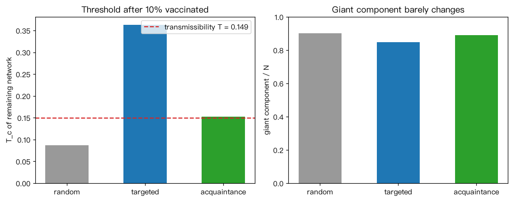
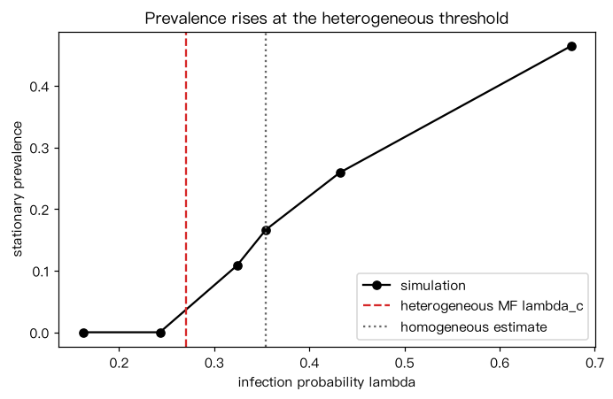
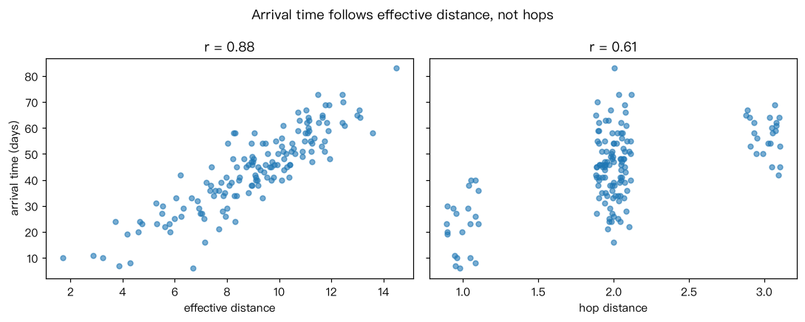
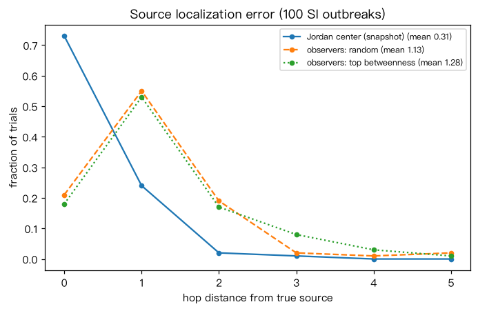

网络上的传播与免疫
研究病原体、信息与行为如何沿网络传播，网络结构怎样决定流行阈值，以及如何选择免疫、追踪与干预对象。
网络结构指标与网络模型描述的是网络“长什么样”：度分布、路径、聚集、社团。网络动力学进一步让网络“动起来”：节点带有状态，状态沿着边变化。传播（spreading）是最直观的一类网络动力学：病原体沿接触网络传播，谣言和健康行为沿社交网络扩散，药物与诊疗新知沿医生网络流动，错误折叠蛋白甚至可能沿脑连接组扩散。
这一专题按“模型—结构—干预—推断”组织，围绕以下科学问题展开：
- 经典模型：没有网络时，SI、SIS、SIR、SEIR 模型说了什么，基本再生数 从何而来（均匀混合下的经典传播模型）。
- 结构如何决定阈值：度分布的异质性怎样改变流行病阈值，为什么无标度网络的阈值会趋近于 0（度异质性与流行病阈值）；真实接触网络从哪里来、有什么结构（接触网络）。
- 更精确的理论：平均场之外，配对近似、边基模型与消息传递如何把聚集、度相关与具体拓扑纳入计算（配对近似、边基模型与消息传递）。
- 超越静态度分布：接触随时间变化、成簇出现（阵发性），人群在城市间流动，这些怎样改变传播的速度与可预测性（时间网络与阵发性、集合种群与全球传播）。
- 从数据估计传播：如何从发病曲线和传播链估计 、时变再生数 与超级传播程度（再生数与超级传播）。
- 干预：给谁接种、追踪谁、监测谁（免疫策略、接触追踪与监测）。
- 信息与行为：社会传染与疾病传播有何不同，怎样选种子使影响最大，怎样从观测反推源头（信息与行为的传播、影响力最大化与关键传播者、传播溯源）。
这些问题直接建立在网络结构指标与随机图中的度分布和二阶矩 ，以及小世界与无标度网络模型中的无标度网络之上。SIR 的最终规模与键渗流等价，因此传播理论与网络鲁棒性、渗流与级联失效共用同一套数学；“删去枢纽”既是蓄意攻击，也是目标免疫。流行阈值 的形式还会在同步与协同动力学的同步阈值中重现。
Contents知识页面
VIDEO讲解视频
文字稿
大家好，这一期我们让网络动起来，看看疾病和信息怎样沿着连接传播。前面我们研究的是网络的结构，这个专题开始研究网络上的过程。传播是最直观的一类网络动力学，也和公共卫生关系最密切。
第一个问题，不考虑网络时，经典的传播模型告诉了我们什么。第二个问题，把传播放到网络上，度分布怎样改变流行病阈值。第三个问题，疫苗有限的时候，应该优先给谁接种。
SIR 模型把人分成三类，易感者、感染者和移除者。感染者增加的速度，取决于传播概率、接触人数和易感者的比例。感染者减少的速度，取决于恢复率。两者一比，就得到基本再生数，也就是一个病人平均能感染几个人。比如流感的基本再生数如果是2，一个病人传两个，两个传四个，很快就会暴发。基本再生数大于1，疾病可以流行，小于1，疾病会自行熄灭。
现在把同样的模型放到一张网络上。红色的节点是感染者，它只能感染和自己直接相连的邻居。大家注意看，最先被感染的往往是那些连接很多的枢纽节点。枢纽一旦被感染，病原体就能迅速到达网络的各个角落。右边的曲线里，感染者比例先上升再下降，移除者比例最后趋于饱和。
2001年，Pastor-Satorras 和 Vespignani 给出了一个关键结果。网络上的流行病阈值，等于平均度除以度的二阶矩。度分布越不均匀，二阶矩越大，阈值就越低。对于无标度网络，网络越大二阶矩越大，阈值趋近于0。举个例子，平均度同样是6，随机网络的阈值约为0.17，无标度网络可能只有0.07。也就是说，再弱的传播能力，也可能引起大范围的流行。这是因为枢纽节点邻居多，既容易被感染，又能感染很多人。
那么疫苗有限的时候，应该给谁接种呢？如果随机接种，在无标度网络里几乎要给所有人接种才能阻断流行。如果优先接种连接最多的人，同样数量的疫苗效果要好得多。可现实中我们往往不知道谁的接触最多。一个巧妙的办法是熟人免疫，随机找一个人，请他推荐一位熟人去接种。因为沿着连接走，更容易走到枢纽，这个方法只用局部信息就接近目标免疫。在代码示例里，大家可以亲手验证，同样接种10%的人，三种策略的效果差别有多大。
信息和行为也会在网络上传播，但机制可能和病原体不同。病原体和大多数信息属于简单传染，一次有效接触就够了。而采纳一种健康行为，往往需要多个朋友的反复影响，这叫复杂传染。实验研究发现，健康行为在聚集程度高的网络里反而扩散得更多。2007年一项研究报告肥胖会在社会网络中传播，影响可达三度分隔。但后来有学者指出，相似的人更容易成为朋友，这种同质性很难和传染区分开。所以读这类研究时，一定要追问因果证据从哪里来。
好，我们用四句话把这一期的内容小结一下。基本再生数决定疾病能否流行，它依赖接触结构，不是病原体的常数。网络的度越不均匀，阈值越低，无标度网络的阈值趋近于0。免疫策略要利用网络结构，目标免疫和熟人免疫都比随机免疫有效。研究社会传播时，要警惕同质性和共同环境带来的假象。
接下来请打开交互演示，亲手比较不同网络和不同免疫策略。然后打开代码示例，用代码估计阈值，检验一下自己的理解。下一期我们讨论另一类网络动力学，同步。
INTERACTIVE交互可视化
CODE计算实现
14 个完整可运行的 Python 示例，每个都给出代码、输出图和解读；可在浏览器中直接运行，或下载 Jupyter Notebook · Python 脚本。
 网络上的离散时间 SIR 模拟（ER 与 BA 网络对比）
网络上的离散时间 SIR 模拟（ER 与 BA 网络对比） 用度分布估计 SIR 流行病阈值
用度分布估计 SIR 流行病阈值
三种免疫策略的比较 扩散中心性与独立级联
扩散中心性与独立级联 三种阈值近似的比较——异质平均场、淬火平均场与非回溯矩阵
三种阈值近似的比较——异质平均场、淬火平均场与非回溯矩阵 边基仓室模型（EBCM）与精确随机模拟的比较
边基仓室模型（EBCM）与精确随机模拟的比较
活动驱动时间网络上的 SIS 阈值
集合种群模型与有效距离 超级传播——负二项后代分布、早期灭绝与“20/80”
超级传播——负二项后代分布、早期灭绝与“20/80” 从发病曲线估计时变再生数 R_t（Cori 方法）
从发病曲线估计时变再生数 R_t（Cori 方法） 向前追踪与向后追踪——传播树中的朋友悖论
向前追踪与向后追踪——传播树中的朋友悖论 影响力最大化——贪心算法与启发式中心性
影响力最大化——贪心算法与启发式中心性 复杂传染——阈值模型在聚集网络与随机网络上的级联
复杂传染——阈值模型在聚集网络与随机网络上的级联
传播溯源——Jordan 中心与基于观测点的估计Papers论文精读
无标度网络上的流行病传播
Epidemic spreading in scale-free networks
Pastor-Satorras R, Vespignani A
用异质平均场分析无标度网络上的 SIS 模型，发现流行病阈值消失，解释了计算机病毒长期低水平流行的现象。
计算机网络与人群的高效免疫策略
Efficient immunization strategies for computer networks and populations
Cohen R, Havlin S, ben-Avraham D
提出“随机选人、给他随机提名的熟人接种”的熟人免疫策略，不需全局信息即可大幅降低阻断流行所需的接种比例。
识别复杂网络中的关键传播者
Identification of influential spreaders in complex networks
Kitsak M, Gallos LK, Havlin S, Liljeros F, Muchnik L, Stanley HE, et al.
发现单个传播源的影响力更取决于它在 k-壳分解中所处的层次，而不是度或介数；多个传播源还需彼此分散。
References核心文献
Pastor-Satorras 与 Vespignani 2001：Epidemic spreading in scale-free networks
- 背景：经典流行病学基于均匀混合，存在有限的流行病阈值。20 世纪 90 年代末发现互联网等网络具有无标度度分布，而计算机病毒长期低水平流行的现象难以用经典理论解释。
- 核心发现：用异质平均场方法分析 SIS 模型，得到 ；对 的无标度网络， 时阈值消失，稳态流行率在 很小时以指数形式趋近于 0。
- 阅读要点：区分“阈值为 0”和“流行规模大”——在阈值附近流行率可以极小。注意 HMF 忽略了度相关性与动态相关，后来的工作（淬火平均场、消息传递方法）修正了部分结论。
- 延伸思考：如果网络存在强的度–度同配性（高度节点相互连接），你预计阈值会升高还是降低？为什么？
DOI：10.1103/PhysRevLett.86.3200；精读：Pastor-Satorras 2001
Christakis 与 Fowler 2007：The spread of obesity in a large social network over 32 years
- 背景：慢性病一般被视为个体风险因素的结果。作者借助弗雷明汉心脏研究中记录的亲友关系，构建 12 067 人的纵向社会网络。
- 核心发现：肥胖在网络中成簇出现，关联延伸到三度分隔；朋友、兄弟姐妹、配偶变胖与个体变胖风险升高相关，邻居无显著关联，同性关系的关联更强，地理距离不影响关联强度。
- 阅读要点：这是观察性研究，识别“传染”依赖模型假设。对照阅读 Cohen-Cole 与 Fletcher（2008）及 Shalizi 与 Thomas（2011）的批评，思考同质性、共同环境与反向因果。可结合原文图 1 的网络可视化阅读。
- 延伸思考：如果要在一所大学用随机化设计检验“运动习惯会在宿舍网络中传播”，应怎样设计干预和对照？
Cohen、Havlin 与 ben-Avraham 2003：Efficient immunization strategies for computer networks and populations
- 背景：目标免疫需要知道每个人的度，现实中难以获得。
- 核心发现：随机选人、再接种其随机熟人的策略，只需局部信息，接种比例远低于随机免疫就能使网络失去巨连通分支，效果接近目标免疫。
- 阅读要点：分析基于渗流理论（删点后巨分支是否存在），与 SIR 的最终规模问题等价；理解为什么“沿边采样”天然偏向高度节点。
- 延伸思考：在医院感染控制中，“熟人”可以对应什么？能否设计一个基于排班表的“熟人免疫”方案？
DOI：10.1103/PhysRevLett.91.247901；精读：Cohen 2003
Lloyd-Smith 等 2005：Superspreading and the effect of individual variation on disease emergence
- 背景： 是平均数。SARS 期间出现了多起“超级传播事件”，但对非性接触传播的疾病，个体传染性差异难以直接测量，其对暴发动力学的影响并不清楚。
- 核心发现：利用 8 种直接传播疾病的接触追踪数据，发现个体再生数的分布常常高度偏斜；考虑这种异质性后，疾病更容易灭绝，暴发更罕见但更具爆炸性；针对个体的控制措施优于全人群均匀措施。作者还给出了超级传播事件的严格定义及其频率的预测方法。
- 阅读要点：理解负二项后代分布与离散参数 ；把分支过程的灭绝概率 与再生数与超级传播中的算例对照。
- 延伸思考：度异质的接触网络会产生怎样的离散参数？网络之外还有哪些因素会使 变小？
Brockmann 与 Helbing 2013：The hidden geometry of complex, network-driven contagion phenomena
- 背景：全球流行的时空图案在地理地图上看起来杂乱无章，难以直观理解与预测。
- 核心发现：用由航空流量定义的有效距离 替代地理距离，复杂图案化为从源头出发的近似匀速波；有效距离能可靠地预测到达时间，即使流行病学参数未知也能给出相对到达时间，并能识别传播的空间源头。方法在 2009 年 H1N1 与 2003 年 SARS 数据上得到验证。
- 阅读要点：理解为什么 是“概率意义上的距离”（多段路径的概率相乘，对数相加）；对照集合种群与全球传播的代码示例。
- 延伸思考：在一个城市内部的医院转诊网络上，可以怎样定义有效距离，用于预测耐药菌在医院间的到达顺序？
Kempe、Kleinberg 与 Tardos 2003：Maximizing the spread of influence through a social network
- 背景：病毒营销与公共卫生推广都要回答“先说服哪几个人”。此前多为启发式（选度最高者）。
- 核心发现：在独立级联与线性阈值模型下，影响力最大化是 NP 难的；但期望传播范围是单调子模函数，贪心算法有 的近似保证，且在实验中优于度与中心性启发式。
- 阅读要点：掌握“活边图”论证子模性的技巧；理解为什么一组最好的种子不是单个排名前 的节点。
- 延伸思考：复杂传染（阈值较高）下传播范围是否仍为子模函数？如果不是，贪心算法会出什么问题？
其他引用文献
正文中引用的其余文献：
- 经典模型与再生数：Kermack 与 McKendrick 1927，10.1098/rspa.1927.0118；Diekmann、Heesterbeek 与 Metz 1990，10.1007/BF00178324；Wallinga 与 Teunis 2004，10.1093/aje/kwh255；Wallinga 与 Lipsitch 2007，10.1098/rspb.2006.3754；Cori 等 2013，10.1093/aje/kwt133。
- 网络阈值与理论方法：Newman 2002，10.1103/PhysRevE.66.016128；Barthélemy 等 2004，10.1103/PhysRevLett.92.178701；Kenah 与 Robins 2007，10.1103/PhysRevE.76.036113；Chakrabarti 等 2008，10.1145/1284680.1284681；Van Mieghem、Omic 与 Kooij 2009，10.1109/TNET.2008.925623；Castellano 与 Pastor-Satorras 2010，10.1103/PhysRevLett.105.218701；Keeling 1999，10.1098/rspb.1999.0716；Volz 2008，10.1007/s00285-007-0116-4；Miller、Slim 与 Volz 2012，10.1098/rsif.2011.0403；Karrer 与 Newman 2010，10.1103/PhysRevE.82.016101；Gleeson 2011，10.1103/PhysRevLett.107.068701。
- 接触网络与时间网络：Liljeros 等 2001，10.1038/35082140；Eubank 等 2004，10.1038/nature02541；Mossong 等 2008，10.1371/journal.pmed.0050074；Salathé 等 2010，10.1073/pnas.1009094108；Rocha、Liljeros 与 Holme 2011，10.1371/journal.pcbi.1001109；Vanhems 等 2013，10.1371/journal.pone.0073970；Holme 与 Saramäki 2012，10.1016/j.physrep.2012.03.001；Vazquez 等 2007，10.1103/PhysRevLett.98.158702；Karsai 等 2011，10.1103/PhysRevE.83.025102；Perra 等 2012，10.1038/srep00469；Valdano 等 2015，10.1103/PhysRevX.5.021005；Salathé 与 Jones 2010，10.1371/journal.pcbi.1000736。
- 集合种群与全球传播：Hufnagel、Brockmann 与 Geisel 2004，10.1073/pnas.0308344101；Colizza 等 2006，10.1073/pnas.0510525103；Colizza 与 Vespignani 2007，10.1103/PhysRevLett.99.148701；Balcan 等 2009，10.1073/pnas.0906910106；Chinazzi 等 2020，10.1126/science.aba9757；Chang 等 2021，10.1038/s41586-020-2923-3。
- 免疫、追踪与监测：Pastor-Satorras 与 Vespignani 2002，10.1103/PhysRevE.65.036104；Dezső 与 Barabási 2002，10.1103/PhysRevE.65.055103；Lloyd-Smith、Galvani 与 Getz 2003，10.1098/rspb.2003.2481；Eames 与 Keeling 2003，10.1098/rspb.2003.2554；Fraser 等 2004，10.1073/pnas.0307506101；Christakis 与 Fowler 2010，10.1371/journal.pone.0012948；Ferretti 等 2020，10.1126/science.abb6936；Kucharski 等 2020，10.1016/S1473-3099(20)30457-6；Adam 等 2020，10.1038/s41591-020-1092-0；Kojaku 等 2021，10.1038/s41567-021-01187-2；Donker、Wallinga 与 Grundmann 2010，10.1371/journal.pcbi.1000715。
- 社会传染与影响力：Coleman、Katz 与 Menzel 1957，10.2307/2785979；Granovetter 1978，10.1086/226707；Watts 2002，10.1073/pnas.082090499；Centola 与 Macy 2007，10.1086/521848；Centola 2010，10.1126/science.1185231；Cohen-Cole 与 Fletcher 2008，10.1136/bmj.a2533；Funk 等 2009，10.1073/pnas.0810762106；Kitsak 等 2010，10.1038/nphys1746；Iyengar、Van den Bulte 与 Valente 2011，10.1287/mksc.1100.0566；Shalizi 与 Thomas 2011，10.1177/0049124111404820；Banerjee 等 2013，10.1126/science.1236498；Kim 等 2015，10.1016/S0140-6736(15)60095-2；Morone 与 Makse 2015，10.1038/nature14604；Iacopini 等 2019，10.1038/s41467-019-10431-6。
- 传播溯源：Shah 与 Zaman 2011，10.1109/TIT.2011.2158885；Pinto、Thiran 与 Vetterli 2012，10.1103/PhysRevLett.109.068702；Lokhov 等 2014，10.1103/PhysRevE.90.012801；Zhang、Zhang、Lv 与 Yin 2016，Identification of efficient observers for locating spreading source in complex networks，Physica A 442: 100–109，10.1016/j.physa.2015.09.017。
- 脑网络扩散：Raj、Kuceyeski 与 Weiner 2012，10.1016/j.neuron.2011.12.040。
Data & tools相关数据与软件
Further延伸资源
| 类型 | 资源 | 说明 |
|---|---|---|
| 教材 | Barabási《Network Science》第 10 章 Spreading Phenomena（链接） | SI/SIS/SIR、异质平均场推导、接触网络、超越度分布、免疫策略与流行病预测的主要参考；Advanced Topics 10.A–10.E 对应本专题的微观模型、网络解析解、目标免疫、SIR 阈值与全球流行模型；CC BY-NC-SA 2.0 |
| 教材 | Kiss、Miller 与 Simon 2017，Mathematics of Epidemics on Networks，Springer（DOI） | 配对近似、边基模型、消息传递与精确模拟的系统处理，对应配对近似、边基模型与消息传递 |
| 综述 | Pastor-Satorras 等 2015, Epidemic processes in complex networks, Rev Mod Phys（DOI） | 网络流行病学最全面的综述，先读第 1–4 节；时间网络、集合种群与免疫见后续章节 |
| 综述 | Holme 与 Saramäki 2012, Temporal networks, Physics Reports（DOI） | 时间网络的概念、度量与传播，对应时间网络与阵发性 |
| 中文视频 | 中国大学 MOOC《复杂网络分析》7.2 网络上的疾病传播（链接） | 13 分钟中文入门 |
| 交互演示 | Complexity Explorables：Facebooked Flu Shots（链接） | 在浏览器里比较随机免疫与熟人免疫，对应免疫策略 |
| 交互演示 | Nicky Case：The Wisdom and/or Madness of Crowds（链接） | 交互文章，直观区分简单传染与复杂传染、阈值与级联，约 30 分钟 |
| 英文视频 | Beveridge：NetSci 12-2 Epidemics on Networks（YouTube） | 6 分钟说明剩余度与传播阈值；需境外网络 |
| 论文 | Kitsak 等 2010, Identification of influential spreaders in complex networks, Nature Physics（DOI） | k-壳与关键传播者，对应影响力最大化与关键传播者；精读：Kitsak 2010 |
| 代码 | EoN（Epidemics on Networks）Python 包（文档） | 基于 NetworkX 的快速 SIS/SIR 模拟与配对近似、EBCM 等方程模型，由该书作者之一维护，可替代代码示例中的手写模拟 |
| 软件 | EpiEstim（R 包，Cori 等 2013） | 从发病曲线估计时变再生数 ，对应再生数与超级传播 |
提示：Barabási《Network Science》在线版需加载境外脚本，在中国大陆可能无法正常显示；标注“需境外网络”的为 YouTube 资源。
Open questions开放问题
- 选择一种你熟悉的疾病或健康行为（如结核、HPV、吸烟、抑郁情绪），说明它更接近简单传染还是复杂传染，在网络上应采用哪种干预策略，为什么？需要哪些数据来检验这一判断？
- 如果手中有一份医院病区的医护–患者接触记录（时间戳 + 两人编号），应如何构建网络（静态还是时序？加权还是不加权？），如何用本专题的方法评估院内感染风险并确定优先监测对象？
- 同一张接触网络上，HMF、淬火平均场与消息传递给出的阈值相差一倍。你会如何设计模拟与敏感性分析，向公共卫生决策者说明“真实阈值”的不确定性？
- 向后追踪在理论上更有效，但需要回溯更长时间、记录更多接触。在保护隐私的数字追踪框架下，你会如何权衡追踪深度、方向与数据保存期限？
- 一次院内耐药菌暴发中，只知道若干患者的阳性检出日期和医院转诊记录。如何结合网络溯源方法与病原体基因组数据推断传入源头？哪些假设最可能不成立？